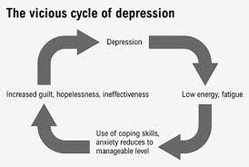
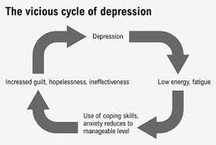

المقدمة
الاكتئاب ليس مجرّد حزن عابر أو حالة نفسية مؤقتة، بل هو اضطراب معقّد يؤثّر
على التفكير والشعور والسلوك، وقد يغيّر حياة الإنسان بالكامل.
إنه مرض صامت،
ينتشر في كل المجتمعات بلا استثناء، ويصيب الأطفال والمراهقين والبالغين
وكبار السن،
وغالبًا ما يظلّ المصابون به يعانون في الظلّ دون أن يلحظهم أحد.
تشير الدراسات الحديثة إلى أنّ الاكتئاب
أصبح واحدًا من أكثر الأمراض النفسية
انتشارًا في القرن الحادي والعشرين،
وأنه السبب الأول للإعاقة على مستوى
العالم. وفي ظلّ الضغوط الاقتصادية والاجتماعية،
يتفاقم المرض ويزداد أثره
على الفرد والمجتمع.
أولًا: مفهوم الاكتئاب وأشكاله
الاكتئاب هو اضطراب نفسي يتميّز بالشعور المستمر بالحزن،
وفقدان الاهتمام
بالأنشطة المعتادة، وانخفاض الطاقة، واضطرابات النوم،
وتراجع القدرة على
التركيز واتخاذ القرار. وللاكتئاب صور متعددة، منها:
1. الاكتئاب الجسيم
(Major Depression) الأكثر شيوعًا، ويستمر لأسابيع أو شهور،
ويؤثر بشكل واضح
على العمل والدراسة والعلاقات.
2. الاكتئاب المزمن (Dysthymia) أخفّ من
الجسيم لكنه طويل الأمد، قد يستمر لسنوات.
3. الاكتئاب الموسمي مرتبط بفصول
السنة، غالبًا يظهر في الشتاء بسبب نقص التعرض للضوء.
4. اكتئاب ما بعد
الولادة يصيب بعض الأمهات بعد الولادة
بسبب التغيرات الهرمونية والنفسية.
ثانيًا: أسباب الاكتئاب
الاكتئاب لا يملك سببًا واحدًا ثابتًا،
بل ينتج عن مجموعة من العوامل
المتداخلة:
1. عوامل بيولوجية خلل في كيمياء الدماغ، خصوصًا النواقل العصبية
مثل السيروتونين والدوبامين.
عوامل وراثية: يزداد احتمال الإصابة إذا كان
هناك تاريخ عائلي للمرض.
2. عوامل نفسية الصدمات العاطفية. التجارب المؤلمة
في الطفولة.
الشعور بالوحدة وانخفاض تقدير الذات.
3. عوامل اجتماعية الضغوط
الاقتصادية والبطالة.
المشكلات الأسرية. التنمّر والعنف.
ثالثًا: أعراض الاكتئاب
تختلف الأعراض من شخص لآخر، لكن أبرزها:
حزن عميق مستمر. فقدان الاهتمام
بالهوايات والأصدقاء.
اضطرابات في النوم (أرق أو نوم مفرط)
. فقدان أو زيادة
الشهية والوزن. الشعور بالذنب أو انعدام القيمة.
الإرهاق والبطء في التفكير
أو الحركة.
التفكير في الموت أو إيذاء النفس (في الحالات الشديدة). هذه
الأعراض تجعل الحياة اليومية صعبة،
وقد تؤثر على الدراسة والعمل والعلاقات.
رابعًا: تأثير الاكتئاب على الفرد والمجتمع
الاكتئاب ليس مرضًا فرديًا فقط، بل له تداعيات واسعة:
1. على المستوى الفردي
انخفاض الإنتاجية. فقدان الشغف والقدرة على اتخاذ القرار.
اضطرابات جسدية مثل
الصداع وآلام المعدة. زيادة احتمالات الإدمان.
2. على المجتمع خسائر اقتصادية
بسبب انخفاض القدرة على العمل.
ارتفاع نسب الانتحار. تدمير العلاقات الأسرية
والاجتماعية.
خامسًا: علاج الاكتئاب
رغم خطورته، إلا أن الاكتئاب من أكثر الاضطرابات النفسية قابلية للعلاج.
1.
العلاج النفسي العلاج السلوكي المعرفي (CBT) وهو الأكثر فعالية.
العلاج
الجدلي السلوكي (DBT).
العلاج الجماعي والدعم الاجتماعي.
2. العلاج الدوائي
مضادات الاكتئاب، التي تساعد على إعادة توازن النواقل العصبية،
لكن يجب
تناولها تحت إشراف طبي متخصص.
3. تغييرات نمط الحياة ممارسة الرياضة. النوم
الجيد. التغذية الصحية.
الابتعاد عن العزلة. تحديد أهداف يومية بسيطة.
خاتمة
الاكتئاب مرض حقيقي، خطير، لكنه قابل للعلاج.
الصمت حوله يقتل أكثر من المرض
نفسه.
لذلك، يجب نشر الوعي، وتشجيع المصابين على طلب المساعدة، وخلق مجتمع
يفهم أن الصحة النفسية
لا تقلّ أهمية عن الصحة الجسدية. إنّ الاعتراف
بالاكتئاب ليس ضعفًا
، بل بداية القوة نحو التعافي.
 
